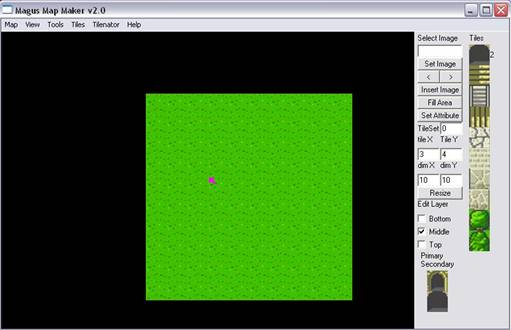
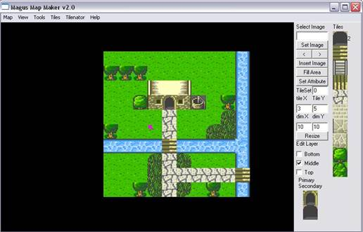
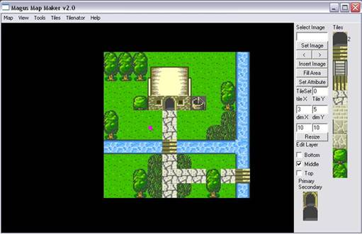
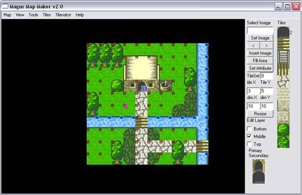

<html xmlns:v="urn:schemas-microsoft-com:vml"
xmlns:o="urn:schemas-microsoft-com:office:office"
xmlns:w="urn:schemas-microsoft-com:office:word"
xmlns="http://www.w3.org/TR/REC-html40">

<head>
<meta http-equiv=Content-Type content="text/html; charset=us-ascii">
<meta name=ProgId content=Word.Document>
<meta name=Generator content="Microsoft Word 11">
<meta name=Originator content="Microsoft Word 11">
<link rel=File-List href="Toggle_files/filelist.xml">
<link rel=Edit-Time-Data href="Toggle_files/editdata.mso">
<!--[if !mso]>
<style>
v\:* {behavior:url(#default#VML);}
o\:* {behavior:url(#default#VML);}
w\:* {behavior:url(#default#VML);}
.shape {behavior:url(#default#VML);}
</style>
<![endif]-->
<title>OpenLibrary</title>
<!--[if gte mso 9]><xml>
 <o:DocumentProperties>
  <o:Author>name</o:Author>
  <o:Template>Normal</o:Template>
  <o:LastAuthor>name</o:LastAuthor>
  <o:Revision>2</o:Revision>
  <o:TotalTime>20</o:TotalTime>
  <o:Created>2005-10-11T09:21:00Z</o:Created>
  <o:LastSaved>2005-10-11T09:21:00Z</o:LastSaved>
  <o:Pages>1</o:Pages>
  <o:Words>63</o:Words>
  <o:Characters>363</o:Characters>
  <o:Lines>3</o:Lines>
  <o:Paragraphs>1</o:Paragraphs>
  <o:CharactersWithSpaces>425</o:CharactersWithSpaces>
  <o:Version>11.5606</o:Version>
 </o:DocumentProperties>
</xml><![endif]--><!--[if gte mso 9]><xml>
 <w:WordDocument>
  <w:SpellingState>Clean</w:SpellingState>
  <w:GrammarState>Clean</w:GrammarState>
  <w:ValidateAgainstSchemas/>
  <w:SaveIfXMLInvalid>false</w:SaveIfXMLInvalid>
  <w:IgnoreMixedContent>false</w:IgnoreMixedContent>
  <w:AlwaysShowPlaceholderText>false</w:AlwaysShowPlaceholderText>
  <w:Compatibility>
   <w:UseFELayout/>
  </w:Compatibility>
  <w:BrowserLevel>MicrosoftInternetExplorer4</w:BrowserLevel>
 </w:WordDocument>
</xml><![endif]--><!--[if gte mso 9]><xml>
 <w:LatentStyles DefLockedState="false" LatentStyleCount="156">
 </w:LatentStyles>
</xml><![endif]-->
<style>
<!--
 /* Font Definitions */
 @font-face
	{font-family:"MS Mincho";
	panose-1:2 2 6 9 4 2 5 8 3 4;
	mso-font-alt:"\FF2D\FF33 \660E\671D";
	mso-font-charset:128;
	mso-generic-font-family:modern;
	mso-font-pitch:fixed;
	mso-font-signature:-1610612033 1757936891 16 0 131231 0;}
@font-face
	{font-family:"\@MS Mincho";
	panose-1:2 2 6 9 4 2 5 8 3 4;
	mso-font-charset:128;
	mso-generic-font-family:modern;
	mso-font-pitch:fixed;
	mso-font-signature:-1610612033 1757936891 16 0 131231 0;}
 /* Style Definitions */
 p.MsoNormal, li.MsoNormal, div.MsoNormal
	{mso-style-parent:"";
	margin:0in;
	margin-bottom:.0001pt;
	mso-pagination:widow-orphan;
	font-size:12.0pt;
	font-family:"Times New Roman";
	mso-fareast-font-family:"MS Mincho";}
a:link, span.MsoHyperlink
	{color:#009999;
	text-decoration:underline;
	text-underline:single;}
a:visited, span.MsoHyperlinkFollowed
	{color:#006666;
	text-decoration:underline;
	text-underline:single;}
p
	{mso-margin-top-alt:auto;
	margin-right:0in;
	mso-margin-bottom-alt:auto;
	margin-left:0in;
	mso-pagination:widow-orphan;
	font-size:12.0pt;
	font-family:"Times New Roman";
	mso-fareast-font-family:"MS Mincho";}
@page Section1
	{size:595.3pt 841.9pt;
	margin:1.0in 1.25in 1.0in 1.25in;
	mso-header-margin:.5in;
	mso-footer-margin:.5in;
	mso-paper-source:0;}
div.Section1
	{page:Section1;}
-->
</style>
<!--[if gte mso 10]>
<style>
 /* Style Definitions */
 table.MsoNormalTable
	{mso-style-name:"Table Normal";
	mso-tstyle-rowband-size:0;
	mso-tstyle-colband-size:0;
	mso-style-noshow:yes;
	mso-style-parent:"";
	mso-padding-alt:0in 5.4pt 0in 5.4pt;
	mso-para-margin:0in;
	mso-para-margin-bottom:.0001pt;
	mso-pagination:widow-orphan;
	font-size:10.0pt;
	font-family:"Times New Roman";
	mso-fareast-font-family:"Times New Roman";
	mso-ansi-language:#0400;
	mso-fareast-language:#0400;
	mso-bidi-language:#0400;}
</style>
<![endif]--><!--[if gte mso 9]><xml>
 <o:shapedefaults v:ext="edit" spidmax="6146"/>
</xml><![endif]--><!--[if gte mso 9]><xml>
 <o:shapelayout v:ext="edit">
  <o:idmap v:ext="edit" data="1"/>
 </o:shapelayout></xml><![endif]-->
</head>

<body bgcolor="#FFFFDF" lang=EN-GB link="#009999" vlink="#006666"
style='tab-interval:.5in' alink="#006666">

<div class=Section1>

<p align=center style='text-align:center'><b><span style='font-size:13.5pt;
font-family:Arial'>Toggle Layers On/Off<o:p></o:p></span></b></p>

<blockquote style='margin-top:5.0pt;margin-bottom:5.0pt'>

<p class=MsoNormal>The series of Toggle commands do exactly as they say. They
turn on or off the selected layer. This allows you to see the components of
each layer independently. Such as which tiles are overlays. Here are some
example screenshots.</p>

<p class=MsoNormal>1<sup>st</sup> layer <span
style='mso-spacerun:yes'>&nbsp;&nbsp;&nbsp;&nbsp;&nbsp;&nbsp;&nbsp;&nbsp;&nbsp;&nbsp;&nbsp;&nbsp;&nbsp;&nbsp;&nbsp;&nbsp;&nbsp;&nbsp;&nbsp;&nbsp;&nbsp;&nbsp;&nbsp;&nbsp;</span><span
style='mso-tab-count:6'>&nbsp;&nbsp;&nbsp;&nbsp;&nbsp;&nbsp;&nbsp;&nbsp;&nbsp;&nbsp;&nbsp;&nbsp;&nbsp;&nbsp;&nbsp;&nbsp;&nbsp;&nbsp;&nbsp;&nbsp;&nbsp;&nbsp;&nbsp;&nbsp;&nbsp;&nbsp;&nbsp;&nbsp;&nbsp;&nbsp;&nbsp;&nbsp;&nbsp;&nbsp;&nbsp;&nbsp;&nbsp;&nbsp;&nbsp;&nbsp;&nbsp;&nbsp;&nbsp;&nbsp;&nbsp;&nbsp;&nbsp;&nbsp;&nbsp;&nbsp;&nbsp;&nbsp;&nbsp;&nbsp;&nbsp;&nbsp;&nbsp;&nbsp;&nbsp;&nbsp;&nbsp;&nbsp;&nbsp;&nbsp;&nbsp;&nbsp;&nbsp;&nbsp;&nbsp;&nbsp; </span><span
style='mso-spacerun:yes'>&nbsp;&nbsp;&nbsp;&nbsp;&nbsp;&nbsp;&nbsp;&nbsp;&nbsp;&nbsp;&nbsp;&nbsp;&nbsp;&nbsp;&nbsp;&nbsp;&nbsp;&nbsp;&nbsp;&nbsp;</span>Up
to 2<sup>nd</sup> layer</p>

<p class=MsoNormal><!--[if gte vml 1]><v:shapetype id="_x0000_t75" coordsize="21600,21600"
 o:spt="75" o:preferrelative="t" path="m@4@5l@4@11@9@11@9@5xe" filled="f"
 stroked="f">
 <v:stroke joinstyle="miter"/>
 <v:formulas>
  <v:f eqn="if lineDrawn pixelLineWidth 0"/>
  <v:f eqn="sum @0 1 0"/>
  <v:f eqn="sum 0 0 @1"/>
  <v:f eqn="prod @2 1 2"/>
  <v:f eqn="prod @3 21600 pixelWidth"/>
  <v:f eqn="prod @3 21600 pixelHeight"/>
  <v:f eqn="sum @0 0 1"/>
  <v:f eqn="prod @6 1 2"/>
  <v:f eqn="prod @7 21600 pixelWidth"/>
  <v:f eqn="sum @8 21600 0"/>
  <v:f eqn="prod @7 21600 pixelHeight"/>
  <v:f eqn="sum @10 21600 0"/>
 </v:formulas>
 <v:path o:extrusionok="f" gradientshapeok="t" o:connecttype="rect"/>
 <o:lock v:ext="edit" aspectratio="t"/>
</v:shapetype><v:shape id="_x0000_i1025" type="#_x0000_t75" style='width:383.25pt;
 height:247.5pt'>
 <v:imagedata src="Toggle_files/image001.jpg" o:title="1st_layer"/>
</v:shape><![endif]--><![if !vml]><![endif]><!--[if gte vml 1]><v:shape
 id="_x0000_i1026" type="#_x0000_t75" style='width:387pt;height:248.25pt'>
 <v:imagedata src="Toggle_files/image003.jpg" o:title="up to 2rd layer"/>
</v:shape><![endif]--><![if !vml]><![endif]></p>

<p class=MsoNormal><o:p>&nbsp;</o:p></p>

<p class=MsoNormal><o:p>&nbsp;</o:p></p>

<p class=MsoNormal>Up to 3<sup>rd</sup> layer<span style='mso-tab-count:9'>&nbsp;&nbsp;&nbsp;&nbsp;&nbsp;&nbsp;&nbsp;&nbsp;&nbsp;&nbsp;&nbsp;&nbsp;&nbsp;&nbsp;&nbsp;&nbsp;&nbsp;&nbsp;&nbsp;&nbsp;&nbsp;&nbsp;&nbsp;&nbsp;&nbsp;&nbsp;&nbsp;&nbsp;&nbsp;&nbsp;&nbsp;&nbsp;&nbsp;&nbsp;&nbsp;&nbsp;&nbsp;&nbsp;&nbsp;&nbsp;&nbsp;&nbsp;&nbsp;&nbsp;&nbsp;&nbsp;&nbsp;&nbsp;&nbsp;&nbsp;&nbsp;&nbsp;&nbsp;&nbsp;&nbsp;&nbsp;&nbsp;&nbsp;&nbsp;&nbsp;&nbsp;&nbsp;&nbsp;&nbsp;&nbsp;&nbsp;&nbsp;&nbsp;&nbsp;&nbsp;&nbsp;&nbsp;&nbsp;&nbsp;&nbsp;&nbsp;&nbsp;&nbsp;&nbsp;&nbsp;&nbsp;&nbsp;&nbsp;&nbsp;&nbsp;&nbsp;&nbsp;&nbsp;&nbsp;&nbsp;&nbsp;&nbsp;&nbsp;&nbsp;&nbsp;&nbsp;&nbsp; </span><span
style='mso-spacerun:yes'>&nbsp;&nbsp;&nbsp;&nbsp;&nbsp;&nbsp;&nbsp; </span>Tile
Attribute layer</p>

<p class=MsoNormal><!--[if gte vml 1]><v:shape id="_x0000_i1027" type="#_x0000_t75"
 style='width:383.25pt;height:248.25pt'>
 <v:imagedata src="Toggle_files/image005.jpg" o:title="up to 3rd layer"/>
</v:shape><![endif]--><![if !vml]><![endif]><!--[if gte vml 1]><v:shape
 id="_x0000_i1028" type="#_x0000_t75" style='width:383.25pt;height:248.25pt'>
 <v:imagedata src="Toggle_files/image007.jpg" o:title="all layers"/>
</v:shape><![endif]--><![if !vml]><![endif]></p>

<p class=MsoNormal><o:p>&nbsp;</o:p></p>

<p class=MsoNormal><o:p>&nbsp;</o:p></p>

<p class=MsoNormal style='text-align:justify;text-justify:inter-ideograph'><span
style='font-size:10.0pt;font-family:Arial'><o:p>&nbsp;</o:p></span></p>

</blockquote>

<p class=MsoNormal align=center style='text-align:center'><span
style='font-size:10.0pt;font-family:Arial'><a href="index.html">Index</a> <o:p></o:p></span></p>

</div>

</body>

</html>
